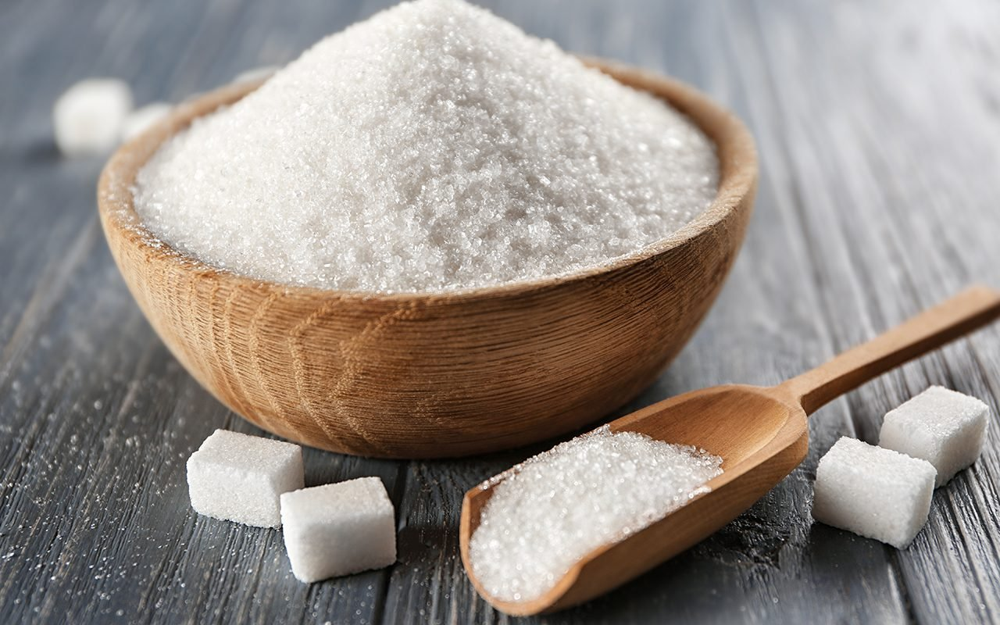

Cheese Cake
What is Chessecake ?
Cheesecake is a rich and creamy dessert made from cream cheese, sugar, and eggs, typically set on a crust made from crushed biscuits or graham crackers. It has a smooth and velvety texture, making it a popular choice for dessert lovers worldwide. Cheesecakes can be baked or unbaked, with variations in texture depending on the preparation method. The classic New York-style cheesecake is dense and creamy, while the Japanese version is light and fluffy. There are many flavors and toppings that enhance the taste of cheesecake, such as chocolate, fruit compote, caramel, or nuts. Some versions incorporate ingredients like lemon, coffee, or even matcha to create unique flavors. Cheesecake is enjoyed in different cultures, with variations like the Italian ricotta cheesecake and the German Käsekuchen. Whether served plain or with a rich topping, cheesecake remains a timeless and indulgent dessert.
How to Make Cheese Cheesecake ?
- Brick cream cheese: Four 8-ounce bricks of full-fat cream cheese are the base of this cheesecake. That’s 2 pounds. Make sure you’re buying the bricks of cream cheese and not cream cheese spread. There are no diets allowed in cheesecake, so don’t pick up the reduced-fat variety!
- Sugar: 1 cup. Not that much considering how many mouths you can feed with this dessert. Over-sweetened cheesecake is hardly cheesecake anymore. Using only 1 cup of sugar gives this cheesecake the opportunity to balance tangy and sweet, just as classic cheesecake should taste. 
- Sour cream: 1 cup. I recently tested a cheesecake recipe with 1 cup of heavy cream instead, but ended up sticking with my original (which can be found here with blueberry swirl cheesecake!). I was curious about the heavy cream addition and figured it would yield a softer cheesecake bite. The cheesecake was soft, but lacked the stability and richness I wanted. It was almost too creamy. Sour cream is most definitely the right choice.
- A little flavor: 1 teaspoon of pure vanilla extract and 2 of lemon juice. The lemon juice brightens up the cheesecake’s overall flavor and vanilla is always a good idea.
- Eggs: 3 eggs are the final ingredient. You’ll beat the eggs in last, one at a time, until they are *just* incorporated. Do not overmix the batter once the eggs are added. This will whip air into the cheesecake batter, resulting in cheesecake cracking and deflating.